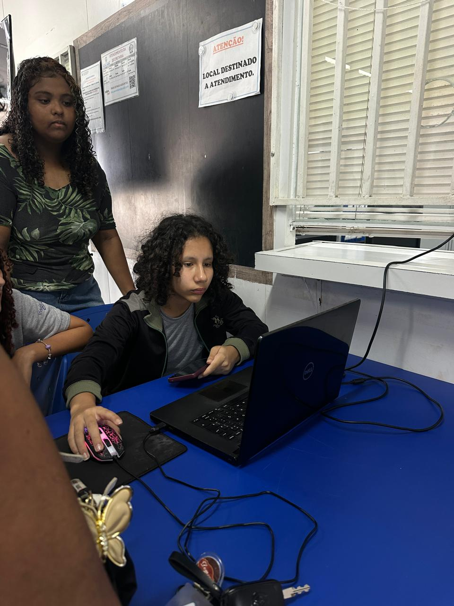
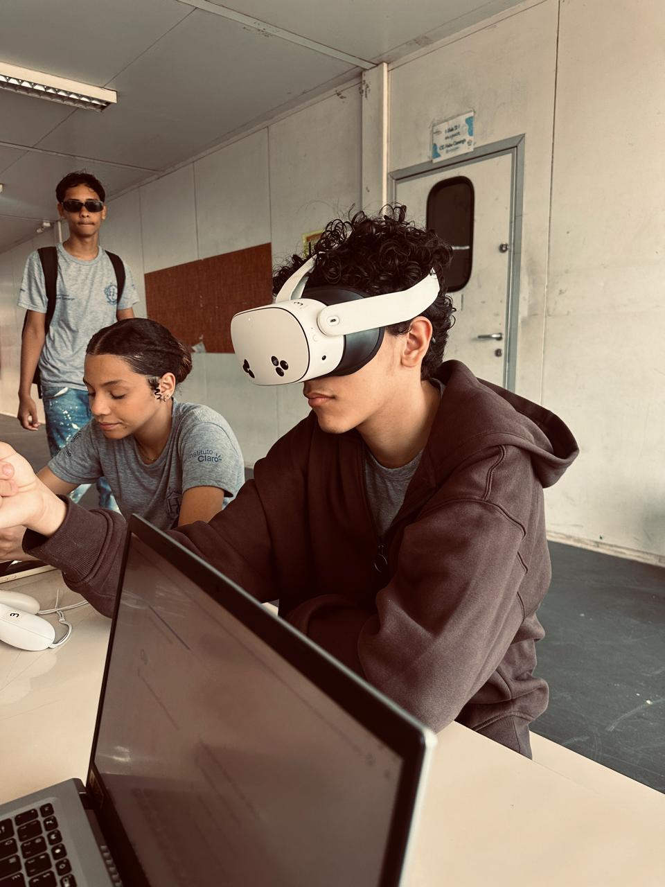
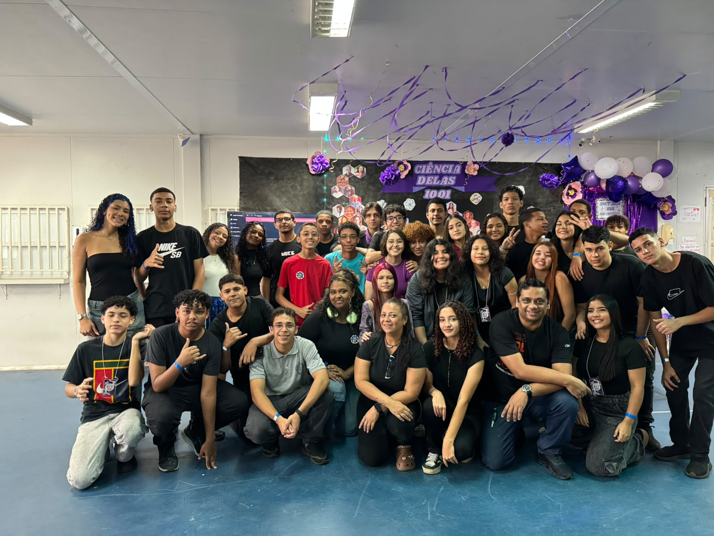

Uma criação da turma 1001
Com pesquisas, criatividade e trabalho em equipe, a turma reuniu ideias e produções para mostrar que a ciência faz parte do nosso dia a dia — e que as mulheres sempre fizeram parte dessa história.
A ciência também tem histórias, rostos e ideias que merecem ser conhecidas. Neste projeto, a gente celebra mulheres que fizeram a diferença e mostra como a curiosidade pode transformar o jeito de olhar para o mundo.
Conhecimento também é lugar de mulher.
Mais do que um trabalho escolar, este é um convite para conhecer mulheres que ajudaram a construir a ciência e inspirar quem vem depois delas.
Com pesquisas, criatividade e trabalho em equipe, a turma reuniu ideias e produções para mostrar que a ciência faz parte do nosso dia a dia — e que as mulheres sempre fizeram parte dessa história.
Com a orientação da professora Jussiara, o projeto ganhou forma e virou uma oportunidade de aprender de um jeito diferente, colocando a mão na massa e compartilhando descobertas.
Os trabalhos da turma são parte importante dessa história. Aqui ficam alguns espaços para apresentar as produções e experiências do projeto.
Conheça as mulheres pesquisadas e as descobertas que mudaram a ciência.
Uma forma diferente e divertida de explorar o conteúdo e aproximar a ciência da turma.
Dos primeiros rascunhos aos detalhes finais: cada contribuição ajudou a montar o projeto.
Registros da turma, da experiência com óculos de realidade virtual e das pessoas que fazem parte desse projeto.

Deborah Uma parte especial do nosso projeto
Experiência com óculos 3D Explorando a ciência de um jeito diferente
Turma 1001 Juntos na construção desse projeto“Quando uma menina se vê na ciência, ela também consegue imaginar tudo o que pode ser.”
— A mensagem que queremos levar com este projeto 💜